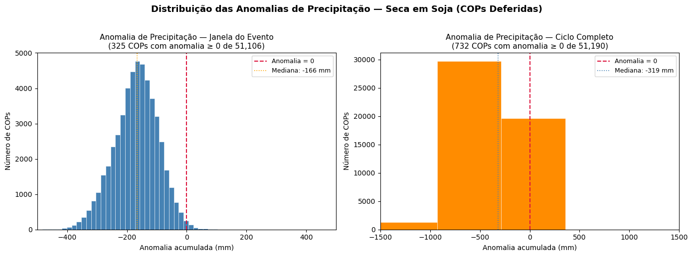
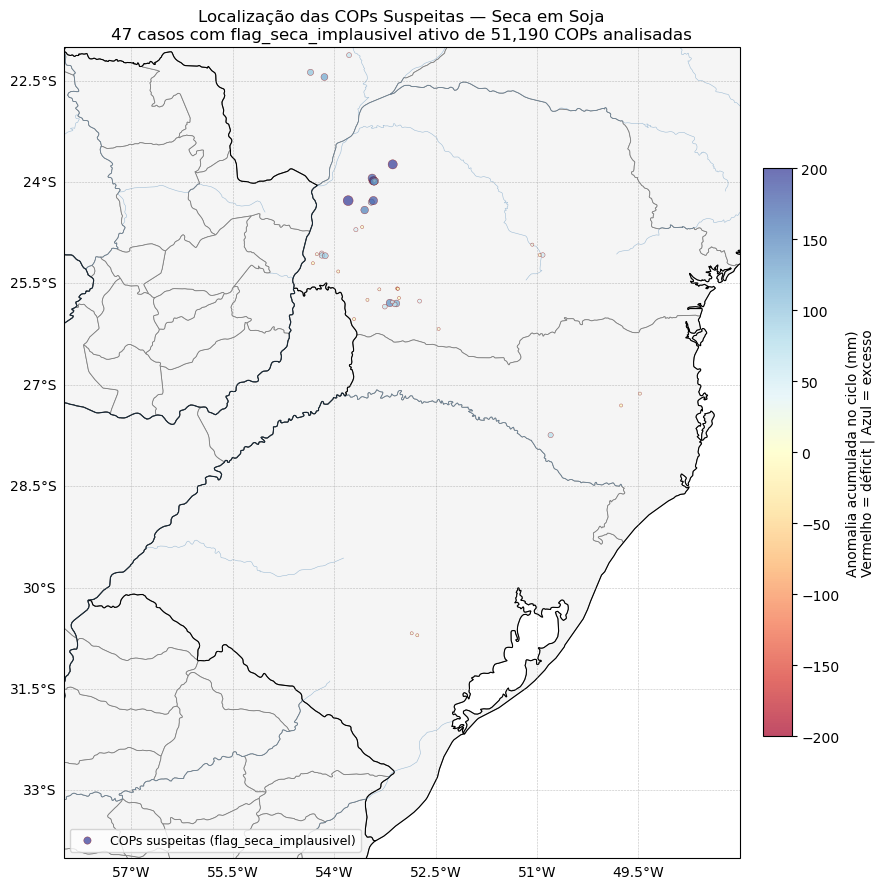
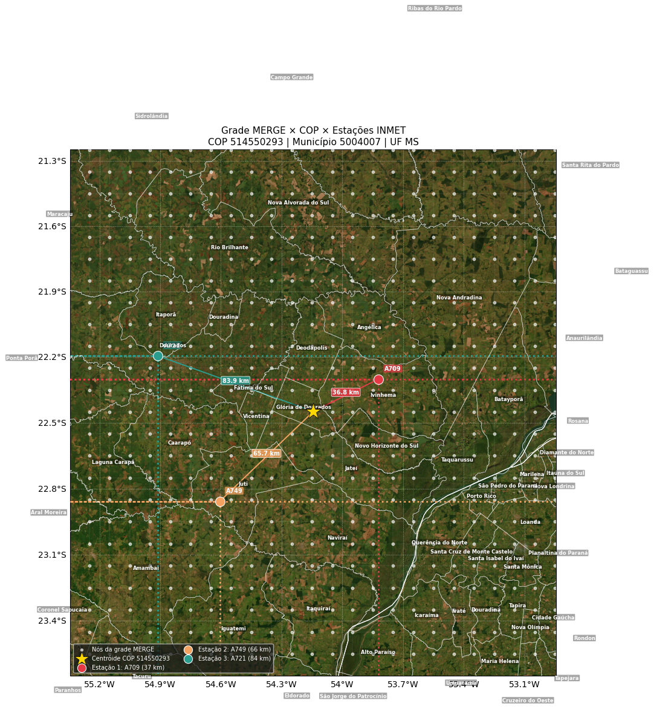
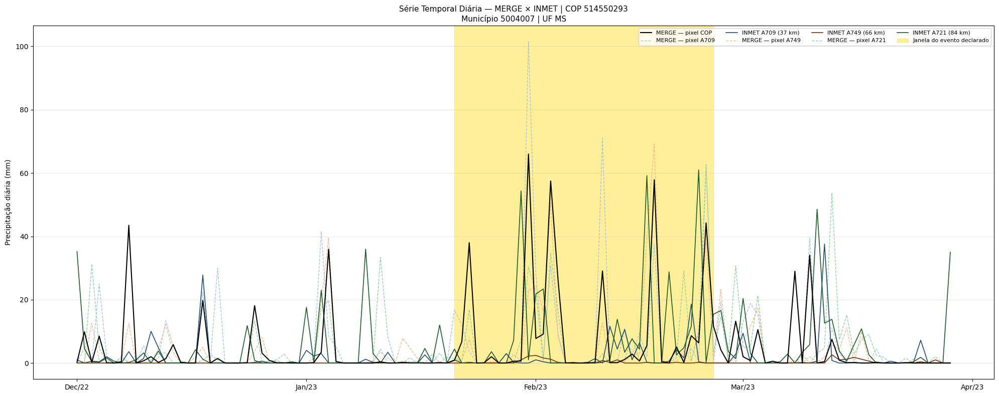
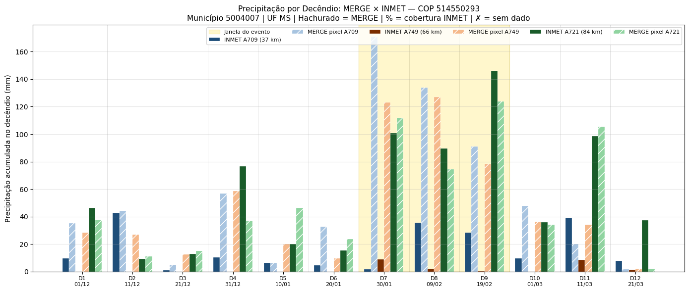
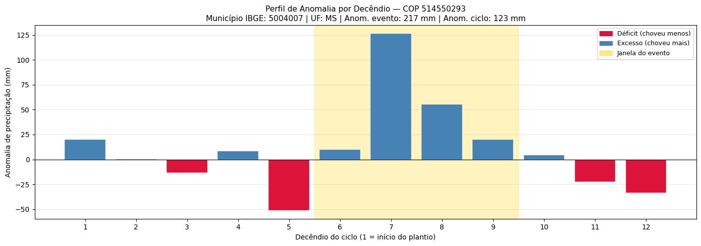
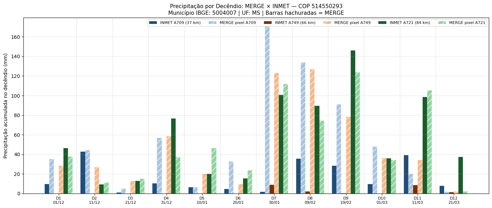
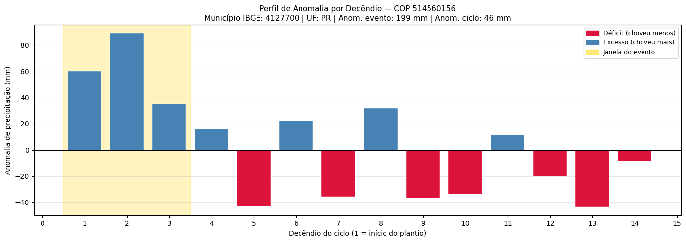
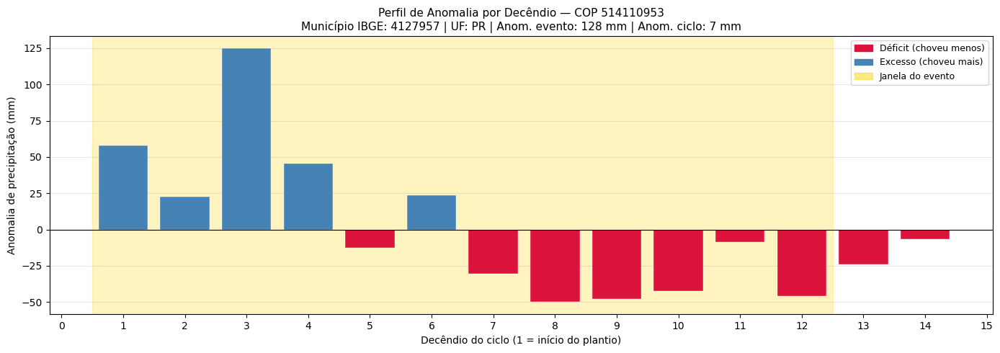

Aula 1 — plausibilidade meteorológica: seca em soja
Este é o pipeline didático mais completo do curso. Vamos verificar, para todas as COPs deferidas de Seca × Soja na safra de verão 2022/23 (Sul do Brasil), se a anomalia de precipitação observada na grade MERGE/CPTEC é compatível com a alegação de seca.
🖼️ Imagem sugerida (IMG-TODO)
- Imagem ideal:
Foto de lavoura de soja com sintomas de estresse hídrico (folhas murchas/amareladas, solo ressecado e rachado).
- Função:
ilustra concretamente o evento “seca em soja” que a aula vai verificar, conectando o objeto da análise à realidade de campo.
- Busca sugerida:
“drought stressed soybean field”; “lavoura de soja seca estresse hídrico”
- Fonte provável:
Embrapa, INMET, Wikimedia Commons
- Facilidade:
alta
A pergunta central:
A anomalia de precipitação observada nos dados em grade (MERGE/CPTEC), comparada à climatologia, é compatível com a ocorrência de seca declarada na COP?
Dados utilizados
Fonte |
Conteúdo |
Formato |
|---|---|---|
MERGE/CPTEC |
Precipitação diária em grade (~0,1°) |
GRIB2 |
SAMeT/CPTEC TMAX/TMIN |
Temperaturas diárias em grade |
NetCDF |
Climatologia MERGE/SAMeT |
Normais diárias (por |
NetCDF |
INMET |
Séries horárias das estações automáticas |
CSV (um por estação/ano) |
Sicor (recorte V2) |
COPs deferidas com metadados agronômicos |
CSV |
Malha IBGE 2023 |
Polígonos municipais SIRGAS 2000 |
Shapefile |
Nota
No notebook original, os caminhos apontam para o disco local do
instrutor (/media/ED520C85.../MESTRADO/...). Substitua por uma
variável DATA_DIR ajustada ao seu ambiente. O período de
análise (2022-06-01 → 2023-07-31) cobre o ciclo da safra
de verão 2022/23.
Passo 0 — carregamento e preparação
Funções utilitárias de leitura
Encapsulamos a leitura em três funções pequenas — uma por produto
de grade — que sempre fazem o mesmo: listar arquivos para o
período, abrir com xr.open_mfdataset concatenando por time
e recortar para o bounding box do Brasil.
import datetime as dt
import glob, numpy as np, pandas as pd
import xarray as xr, geopandas as gpd
import matplotlib.pyplot as plt
import cartopy.crs as ccrs, cartopy.feature as cfeature
import folium
startdate = dt.datetime.strptime('2022-06-01', '%Y-%m-%d')
enddate = dt.datetime.strptime('2023-07-31', '%Y-%m-%d')
ds_prec = open_merge(startdate, enddate).load()
ds_prec_clima = xr.open_mfdataset(f'{path_clima}/MERGE_CPTEC_*.nc',
combine='nested', concat_dim='time'
).load().sortby('time')
Leitura do INMET
def open_inmet(startdate, enddate):
"""Lê, padroniza e concatena CSVs horários do INMET."""
anoi, anof = startdate.year, enddate.year
arquivos = []
for ano in range(anoi, anof + 1):
arquivos += sorted(glob.glob(f'{path_inmet}/{ano}/*.CSV'))
# ... encoding='latin1', sep=';', decimal=',', skiprows=8 ...
# ... renomeia colunas, extrai COD do nome do arquivo,
# ... constrói índice DATA+HORA, troca -9999 por NaN.
return df
df_inmet = open_inmet(startdate, enddate)
# Shift de -12h para alinhar UTC ao dia civil brasileiro
df_inmet['DATA'] = pd.to_datetime(df_inmet['DATA']) - pd.Timedelta(hours=12)
Recorte Sicor com correção de coordenadas
df_sicor = pd.read_csv('sicor-interest.anom.csv', low_memory=False)
df_sicor['longitude_centroide'] = df_sicor['longitude_centroide'].abs() * -1
mask_lat = df_sicor['latitude_centroide' ].between(LAT_MIN, LAT_MAX)
mask_lon = df_sicor['longitude_centroide'].between(LON_MIN, LON_MAX)
df_sicor = df_sicor[mask_lat & mask_lon]
seca_soja = df_sicor[
(df_sicor['produto'] == 'soja') &
(df_sicor['nome_evento'] == 'Seca') &
(df_sicor['dt_fim_plantio'] >= startdate) &
(df_sicor['dt_fim_colheita'] < enddate)
].copy()
# Deduplicação por (ref_bacen, nu_ordem)
seca_soja = (seca_soja
.sort_values(['ref_bacen', 'nu_ordem', 'nu_indice'])
.drop_duplicates(subset=['ref_bacen', 'nu_ordem'], keep='first'))
Mapa exploratório (Folium):
mapa = folium.Map(location=[-28, -53], zoom_start=6, control_scale=True)
for _, row in seca_soja.iterrows():
folium.CircleMarker(
location=[row['latitude_centroide'], row['longitude_centroide']],
radius=2, color='blue', fill=True, fill_opacity=1, weight=0.5,
).add_to(mapa)
Passo 1 — datas de referência
seca_soja['data_ref_evento'] = (seca_soja['dt_inicio_evento']
.fillna(seca_soja['dt_comunicacao']))
seca_soja['duracao_evento_dias'] = (
seca_soja['dt_fim_evento'] - seca_soja['dt_inicio_evento']
).dt.days
Passo 2 — três estações INMET mais próximas (Haversine vetorizado)
def haversine_km(lat1, lon1, lat2, lon2):
R = 6371.0
lat1_r, lat2_r = np.radians(lat1), np.radians(lat2)
dlat = np.radians(lat2 - lat1)
dlon = np.radians(lon2 - lon1)
a = np.sin(dlat/2)**2 + np.cos(lat1_r)*np.cos(lat2_r)*np.sin(dlon/2)**2
return R * 2 * np.arctan2(np.sqrt(a), np.sqrt(1 - a))
lat_est, lon_est, cod_est = df_coords[['Latitude', 'Longitude', 'Código']].values.T
for rank in [1, 2, 3]:
seca_soja[f'cod_estacao_{rank}'] = pd.NA
seca_soja[f'dist_estacao_{rank}_km'] = np.nan
# Loop vetorizado por COP: top 3 estações
for idx, row in seca_soja.iterrows():
d = haversine_km(row['latitude_centroide'], row['longitude_centroide'],
lat_est, lon_est)
order = np.argsort(d)[:3]
for rank in [1, 2, 3]:
seca_soja.at[idx, f'cod_estacao_{rank}'] = cod_est[order[rank-1]]
seca_soja.at[idx, f'dist_estacao_{rank}_km'] = d[order[rank-1]]
Passo 3 — anomalia de precipitação na janela do evento
Para cada COP calculamos:
Observado (MERGE acumulado na janela);
Climatologia (normal do mesmo período);
Anomalia (obs − clima) em mm.
Sinal negativo → choveu menos que o normal → plausível com seca. Sinal positivo → choveu mais que o normal → suspeito.
doy_para_idx = {t.dayofyear: i for i, t in
enumerate(pd.to_datetime(ds_prec_clima.time.values))}
resultados = []
for idx, row in seca_soja.iterrows():
lat, lon = row['latitude_centroide'], row['longitude_centroide']
di, dfm = row['dt_inicio_evento'], row['dt_fim_evento']
obs = ds_prec.sel(longitude=lon, latitude=lat, method='nearest') \
.sel(time=slice(di, dfm))['rdp'].sum().item()
doys = [t.dayofyear for t in pd.date_range(di, dfm)]
clima = float(sum(ds_prec_clima.pmed.isel(time=doy_para_idx[d])
.sel(lon=lon, lat=lat, method='nearest').item()
for d in doys))
resultados.append({'ref_bacen': row['ref_bacen'],
'prec_evento_mm': obs,
'clim_evento_mm': clima,
'anom_evento_mm': obs - clima})
seca_soja = seca_soja.merge(pd.DataFrame(resultados), on='ref_bacen', how='left')
Passo 4 — anomalia decendial (ciclo completo)
Por que decêndios?
unidade temporal do ZARC [23];
alinha com fases fenológicas (V1-V6 vs R1-R3 vs R5-R6) [85];
mais fino que mensal, mais robusto que diário.
🖼️ Imagem sugerida (IMG-TODO)
- Imagem ideal:
Diagrama dos estádios fenológicos da soja (vegetativos V1–Vn e reprodutivos R1–R8), com a planta ilustrada em cada fase.
- Função:
dá suporte visual à associação entre decêndios e fases fenológicas (V1-V6, R1-R3, R5-R6) citada na lista, ancorando o porquê da escolha decendial.
- Busca sugerida:
“soybean phenological stages V1 R8 diagram”; “estádios fenológicos da soja diagrama”
- Fonte provável:
Embrapa, extensão universitária, Wikimedia Commons
- Facilidade:
alta
def gerar_decendios(d_ini, d_fim, n_dias=10):
blocos, atual = [], d_ini
while atual < d_fim:
fim = min(atual + pd.Timedelta(days=n_dias - 1), d_fim)
blocos.append((atual, fim))
atual = fim + pd.Timedelta(days=1)
return blocos
resultados_dec = []
for _, row in seca_soja.iterrows():
for i, (di, dfm) in enumerate(
gerar_decendios(row['dt_inicio_plantio'], row['dt_fim_colheita'])):
obs = ds_prec.sel(longitude=row['longitude_centroide'],
latitude =row['latitude_centroide'],
method='nearest') \
.sel(time=slice(di, dfm))['rdp'].sum().item()
clim = sum(ds_prec_clima.pmed.isel(time=doy_para_idx[t.dayofyear])
.sel(lon=row['longitude_centroide'],
lat=row['latitude_centroide'], method='nearest').item()
for t in pd.date_range(di, dfm))
resultados_dec.append({'ref_bacen': row['ref_bacen'],
'decendio_num': i + 1,
'decendio_ini': di,
'decendio_fim': dfm,
'prec_decendio_mm': obs,
'clim_decendio_mm': clim,
'anom_decendio_mm': obs - clim})
df_decendios = pd.DataFrame(resultados_dec)
Passo 5 — métricas agregadas e flags de implausibilidade
df_metricas = (df_decendios.groupby('ref_bacen').agg(
n_decendios_ciclo = ('decendio_num', 'count'),
n_decendios_anom_neg = ('anom_decendio_mm', lambda x: (x < 0).sum()),
n_decendios_anom_pos = ('anom_decendio_mm', lambda x: (x > 0).sum()),
anom_minima_mm = ('anom_decendio_mm', 'min'),
anom_acum_ciclo_mm = ('anom_decendio_mm', 'sum'),
).reset_index())
seca_soja['flag_seca_sem_anom_evento'] = (
seca_soja['anom_evento_mm'].notna() &
(seca_soja['anom_evento_mm'] >= 0)
)
seca_soja['flag_seca_sem_anom_ciclo'] = (
seca_soja['anom_acum_ciclo_mm'].notna() &
(seca_soja['anom_acum_ciclo_mm'] >= 0)
)
seca_soja['flag_seca_implausivel'] = (
seca_soja['flag_seca_sem_anom_evento'] &
seca_soja['flag_seca_sem_anom_ciclo']
)
Passo 6 — distribuição das anomalias

Figura 57 - Distribuição das anomalias em duas escalas. Para um conjunto de COPs de seca, a massa deveria estar à esquerda de zero (anomalias negativas). As COPs à direita são as que acionam o flag de implausibilidade.
Passo 7 — mapa dos casos suspeitos
suspeitos = seca_soja[seca_soja['flag_seca_implausivel']].copy()
print(f'Total de casos suspeitos: {len(suspeitos):,}')
print(suspeitos['cd_estado'].value_counts())
print(suspeitos['ano_emissao'].value_counts().sort_index())

Figura 58 - Casos com flag_seca_implausivel ativos. Cores na escala
RdYlBu (vermelho = déficit, azul = excesso). Como o flag
isola excessos, os pontos ficam predominantemente no lado azul.
Passo 8 — diagnóstico detalhado (MERGE × INMET)
Para o caso de maior anomalia positiva, plotamos:
Mapa de contexto — grade MERGE + COP + estações;
DataFrame temporal com 7 séries diárias (MERGE pixel COP + MERGE pixel 3 estações + INMET 3 estações);
Série diária com janela do evento destacada;
Barras por decêndio com cobertura INMET.

Figura 59 - Mapa de contexto sobre imagem de satélite. Pontos brancos: grade MERGE. Estrela dourada: centróide da COP. Círculos coloridos: estações INMET (top 3).

Figura 60 - Série diária no ciclo completo. Linha preta grossa: MERGE no pixel da COP. Tracejadas claras: MERGE nos pixels das 3 estações. Sólidas escuras: INMET. Faixa dourada: janela do evento declarado pelo perito.

Figura 61 - Comparativo MERGE × INMET por decêndio. Anotações marcam a
cobertura INMET (✗ = sem dado; XX% = cobertura parcial).
Discordâncias podem indicar evento convectivo local que o MERGE
suavizou.
Passo 9 — top 3 casos suspeitos (lote)
Encapsuladas as visualizações em duas funções, geramos perfil de anomalia + comparativo MERGE × INMET para os 3 casos com maior anomalia positiva:

Figura 62 - Perfil de anomalia por decêndio (caso 1). Barras vermelhas → déficit; barras azuis → excesso; faixa dourada → janela do evento declarado pelo perito.

Figura 63 - Comparativo MERGE × INMET por decêndio para o mesmo caso 1.

Figura 64 - Caso 2.

Figura 65 - Caso 3.
Passo 10 — exploração livre
Trocando ref_analise por qualquer ref_bacen de suspeitos
(ou do conjunto completo) reproduzimos o diagnóstico para outro caso:
ref_analise = suspeitos['ref_bacen'].iloc[0]
plot_anomalia_decendios(ref_analise, df_decendios, seca_soja)
plot_merge_vs_inmet (ref_analise, df_decendios, seca_soja,
df_inmet, df_coords, ds_prec)
Síntese
O DataFrame seca_soja foi enriquecido com:
Coluna nova |
Origem |
O que representa |
|---|---|---|
|
COP + RCP |
Melhor estimativa da data de início |
|
INMET |
3 estações mais próximas |
|
MERGE − clima |
Anomalia na janela do evento |
|
MERGE − clima |
Anomalia acumulada no ciclo |
|
lógica composta |
Ambos flags ativos |
Aviso
Estes flags não acusam fraude — apenas indicam onde olhar. Toda investigação adicional deve combinar campo, agronomia local, ZARC e parecer técnico.
Próximos passos
Aula 2 — plausibilidade meteorológica: chuva excessiva em trigo — mesma estrutura com lógica invertida.
Aula 3 — plausibilidade meteorológica: geada em trigo — fenômeno de microescala com SAMeT TMIN.
Aula 4 — recorrência espacial e atores: Sul × SEALBA — visão regional de longo prazo.
Identificação de outliers e inconsistências meteorológicas em sinistros — fundamentos teóricos do conceito de outlier meteorológico.